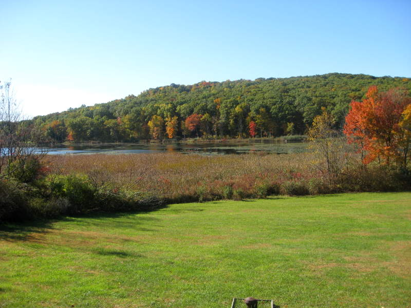

The weekend at the Berkshires had its share of perversions going on. William is in the back with the blow-up doll, kicking his legs to "New York, New York". Jay is climbing towards a giggling Krista. This is what I saw when I showed up. However, I just drove for over 5 hours, so I was stuck.
I ignored all these disturbing shenanigans and cuddled up with a teddy bear I found.
Murali, Aliona, Victoria at a table, playing Hoopla. Aliona was peddling her Belarusian candies like nobody's business.
Jay playing beautiful music, with his blow-up backup singers.

The blow-up dolls scared me off, and I went to explore the countryside.
I approached this shy bird and had a wonderful conversation with it.
Treasures awaited us on the other side of Chrysler Lake.
Aliona and I decided to take matters into our own hands. We wanted to see those trees closer!
We borrowed a nearby rowboat with only one oar (the other was locked down). Aliona found a rusty snowshovel to paddle with.
Guess who got to paddle with the snowshovel? You thought I was kidding.
Aliona, my partner in crime, with the oar.

An artistic rendition of our escapade. There were ducks that flew away from the lake, so I drew one here.
It took forever to fight the breeze and finally get near the other side. Rowing through these lily pads was fun, but they didn't help.
We decided this was as pretty as it was going to get, so we steered around and headed back after scaring about 200 ducks away.
Upon returning to shore, I saw a tree with a ladybug. It was time for me to bust out the digital macro mode. I spent about 10 minutes trying to get this bugger in focus. This was the best I could get.
Fortunately for me, he didn't fly away. Just kept crawling.
Aliona was jealous of this well and wanted to use it, but the owners were home, so we left it alone.
Aliona got over the well, with the comfort of a hammock and a bloody mary. We determined we really liked the bloody maries, but not too much at once. They hurt.
Murali was the first couchsurfer that I ever hosted. I was really happy to see him show up. However, I didn't chat with him as much as I'd have liked to. Then again, we talked a lot when I was hosting him, so perhaps it was time to share the Murali.
Underground monsters were chewing at Naima's hair. She desperately was trying to fight off the monster, while looking calm and peaceful for the camera.

From left to right, Matt, Aine, Melanie, and Dileep. I remember Matt because he sat in a box. Aine I'll remember as the hammock-snatcher. Melanie confessed that one of her nicknames is "Melicious". Dileep I've known a while ago, starting from a CS barbecue I hosted in May. We kept sliding into each other during a volleyball game. Probably my fault, but Dileep doesn't care. He knows how to stay cool.
Amit preferred to play his music without the blow-up dolls.
I don't think it's possible for Lynn and Kyungmi to look more sunshiny.

Emma raiding the fridge, with Jenn and Victoria preparing dinner, telling me to get lost. Is that Jenn giving me the finger?!? I just wanted to take a picture :(
Aine, the hammock thief, waited quietly for Aliona and I to get up. In a flurry of blankets and pillows, she dove onto the hammock.
Here's a shot of practically everyone that showed up for a weekend of fun and Victoria's glorious turkey dinner. I can't describe just how good the food was. I'm not for animal cruelty, but this turkey's sacrifice was for a very tasty cause. A very interesting soul was Dave, just behind Melanie on the left. He made wonderful floral arrangements for the dinner. It couldn't have been more elegant. The next day, he was seen jumping from trees into leaf piles.
From the bottom, counter-clockwise: Dileep, Lynn, Jeff, Cynthia, Katie, Jenn, Ryan. I was just going around snapping pictures of everyone, and these guys couldn't fit at the red table. Dave's flowers got moved to this table to cheer them up.
This was among the most foolish things I've seen in a while. This bonfire should have been further from the trees :) We spent a while spraying water around it to contain it. The sparks made me nervous.
Once the fire calmed down a bit, we took turns going on visionquests.
Matt couldn't find a chair, but the firewood was used up, so this box was comfortable.
Here's me knocking down my best friend Aliona's chair accidentally. I didn't mean to.
Aliona and I went for a walk at night to go stargazing. We saw a creepy house on the way with a table in front of it. I couldn't see what was on the table, so that's what flash photography is perfect for. It looked like someone was selling... hamburger condiments?
Victoria and Dileep were destroying the competition in beer pong. Aliona and I took a shot at it and got beaten soundly. Lynn and Sergio were taking their turn here. I don't think they won, but from what I heard, things did not end too well for Dileep.
Jay plays an original song of his for Aliona and I. Good memories :)
Back